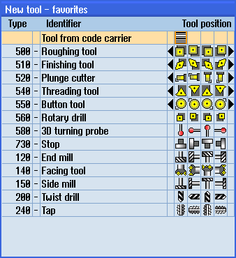

With a code carrier connection, in the list of favorites, there is also a tool available.

New tool from code carrier in the list of favorites
Creating a new tool from code carrier
 | 1. | The tool list is opened. |
| | 2. | Place the cursor in the tool list at the position where the new tool should be created. For this, you can select an empty magazine location or the NC tool memory outside of the magazine. You may also position the cursor on an existing tool in the area of the NC tool memory. Data from the displayed tool will not be overwritten. |
 | 3. | Press the "New tool" softkey. |
| | | The "New Tool - Favorites" window opens. |
 | 4. | Position the cursor on the entry "Tool from code carrier" and press the "OK" softkey. The tool data is read from the code carrier, and is displayed in the "New tool" window with the tool type, tool name and possibly with certain parameters. |
| 5. | Press the "OK" softkey. The tool is added to the tool list with the specified name. If the cursor is located on an empty magazine location in the tool list, then the tool is loaded to this magazine location. |
Unloading tool on code carrier
| | 1. | The tool list is opened. |
 | 2. | Place the cursor on the tool that you would like to unload from the magazine and press the "Unload" and "On code carrier" softkeys. The tool is unloaded and the data of the tool are then written to the code carrier. |
According to the appropriate setting, after being read out on the code carrier, the unloaded tool on the code carrier is deleted from the NC memory.
Delete tool on code carrier
| 1. | The tool list is opened. |
| | 2. | Position the cursor on the tool on code carrier that you want to delete. |
 | 3. | Press the "Delete tool" and "On code carrier" softkeys. The tool is unloaded and the data of the tool are written to the code carrier. The tool is then deleted from the NC memory. |
The deletion of the tool can be set differently, i.e. the "On code carrier" softkey is not available.